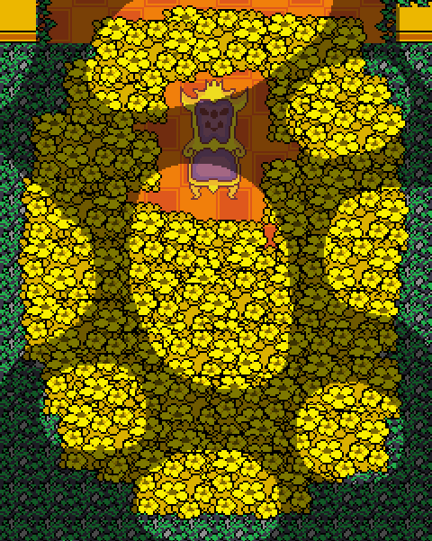

Howdy! I'm FLOWEY. FLOWEY the FLOWER!
Hmmm...
You're new to the UNDERGROUND, aren'tcha?
Golly, you must be so confused.
Someone ought to teach you how things work around here!
I guess little old me will have to do.
Ready? Here we go!
ABOUT
Undertale is a beloved indie roleplay video game released in 2015 by American indie game developer Toby Fox with additional art by Temmie Chang. The game uses many typical game mechanics of traditional RPGs but subverts them in a way that weaves a compelling story of choice and morality. Mostly notably, the player is not required to kill any enemies like they would in traditional RPGs and can instead choose to between fighting, killing, befriending and sparing the monsters you come across. Your choices will affect the story and leads you to one of the game's many possible endings. Known for its humor, emotional depth, nostalgic soundtrack, and unique mechanics, Undertale subverts classic game tropes, offering a memorable experience full of surprises.
SYNOPSIS
A human child falls into the Underground, a vast world of monsters that lies under the Earth's surface, separated from the human world by a magical barrier. The player controls the child as they explore each of the Underground's colourful regions, discover many hidden secrets, and encounter numerous unique characters that you may choose to befriend or fight. In your journey back to the surface, the choices you make will determine your outcome. How will you face the challenges thrown your way?
“Take care of yourself kid. ‘Cause someone really cares about you.”
CHARACTERS
Flowey
The first character you meet in the Underground. Don't be fooled by his friendly appearance; there is more to this little flower that meets the eye. What secrets will you discover about this monster's past?
The Fallen Child (Frisk)
The protagonist of the game and the character you play as. After falling into the Underground, this young child must journey through a mysterious new world to escape back to the surface. Their name is revealed to be 'Frisk' during the 'True Pacifist' ending.
Toriel
A kind and motherly goat that seeks only to guide and protect any children that fall into the Underground. However, her love may stand in the way of your ability to return home. Fun Fact: 'Toriel' is a play on the word 'Tutorial', as that is what her chapter serves as.
Sans
An easy-going comedic sketeton who cares deeply about his brother and is willing to play along with his grand dreams (while still helping the player out). However, there's a deeper understanding behind that carefree smile — he's not as harmless as he seems.
Papyrus
Confident and flamboyant, 'THE GREAT PAPYRUS' (as he likes to call himself) is an rambunctious sketeton who seeks to capture the human in order to finally join the Royal Guard and achieve fame and popularity. He often forces his older brother, Sans, to join him on his quest.
Asgore
The King of the Underground. Asgore seeks to collect seven human souls to finally break the magical Barrier trapping his people, but he struggles with the morality of his actions. He serves as a major antagonist for our protagonist.
Undyne
The Leader of the Royal Guard and King Asgore's strongest warrior. Undyne the Undying protects her king and searches the Underground for any humans to bring him, making her a major threat the human.
Alphys
The Royal Scientist. Though she is very intelligent and passionate about her work and her many interests, this is reptilian monster can often shy and insecure. What experiments has she been working on?
Mettaton
This attention-grabbing, charsmatic robot was built for the stage! Though he has originally made to be a charming TV host, his creator, Dr. Alphys, has recently added a few 'anti-human combat features' to his arsenal. You can bet an encounter with Mettaton will be quite a show!
Annoying Dog
A self-insert character of the creator of the game, Toby Fox. This mischevious dog will periodically show up and comically ruin a character's plans (mostly Papyrus')
LOCATIONS
The Ruins
Snowdin Town
Waterfall
Hotland
CORE
New Home

"You're filled with DETERMINATION"
HOW TO PLAY
ENCOUNTERS
Throughout the game you will be thrown into 'FIGHT' encounters, in which the player switching between choosing how to interact with their enemy and dodging their attacks in 'bullet hell combat'. Your enemy will have many dynamic dialouges and reactions to your actions.
When if it is your turn to make a move, there are four main options you can choose from:
Choosing this option allows you to pick a monster to attack and potentially kill. The game will will prompt you with a quick-time bar, with a bar sliding over a meter. You must press [Z] or [ENTER] before the bar moves all the way across the meter in order to deal an attack. To deal an attack with the most damage, you must press [Z] or [ENTER] so that the moving bar lands on central meter point. If the monster's HP is low enough, their name will change colour, indicating they can be spared. If the monster's HP reaches zero, the monster will die and be turned to dust.
A more sociable way of interacting with monsters during an encounter; there are many ways to 'ACT' depending what monster you are engaged with. Using ACT can be another method of peacefully ending a fight and is must safer option compared to FIGHTing the enemy.
Items can help you regain HP and possibly increase your other stats.
Sparing allows you to end the fight without killing your opponent. In order to spare, you must have survived the encounter long enough for this option to become avaliable for your enemy. This is indicated when their name tag to change colour
Non-Combat
When not engaged in combat, Undertale offers exploration, puzzle-solving, and interaction with a vibrant cast of characters. Players navigate through various environments, uncovering secrets, lore, and humorous encounters. Conversations with NPCs are lively, often revealing hidden details about the world and its inhabitants.
Every decision—big or small—shapes the world and affects future encounters, making exploration and interaction just as important as battles.
ENDINGS
There are three main endings you can achieve.
TRUE PACIFIST
Considered the 'true ending' of the game, this route requires you to first complete a neutral route, then replay the final battle. You will have had to have spared every monster you had come across, befriended the core characters (particularly Papyrus, Undyne, Alphys) and explored the False Lab. The True Pacifist Route ends with the barrier being broken, and both the human and the monsters of the Underground being freed.
NEUTRAL
These endings occurs if not all the requirements of the other two routes have been met. This route ends with the human escaping back to the surface alone and then later recieving a call from Sans, who updates the player on the fate of the Underground due to their influence. This can have many variations based on your previous choices.
GENOCIDE
This ending occurs if you to choose kill every possible monster you come across. This will result many changes to the story and beyond — as it results in the complete destruction of the game's world. If the player try to re-launch the game after a completed Genocide Route, the protagonist must give up their SOUL to a mysterious character in exchange for the recreation of the world. From there, the game will still be permenantly altered, with the other endings being affected.